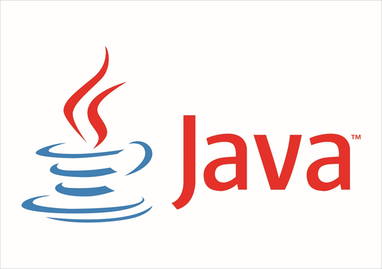

Термины
- JavaScript
- Мультипарадигменный язык программирования. Поддерживает объектно-ориентированный, императивный и функциональный стили. Является реализацией спецификации ECMAScript. JavaScript обычно используется как встраиваемый язык для программного доступа к объектам приложений.
- Sun Microsystems
- Компания, в которой работал Гослинг и где в 1995 году был разработан язык Java.
- NeWS
- Оконная система, созданная Джеймсом Гослингом, которую он разработал до Java.
